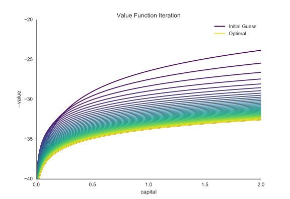
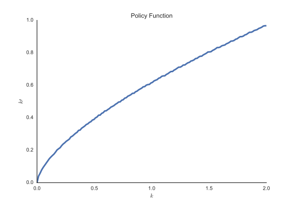

Eight months ago, Trey Causey wrote a post about modeling expected points in football, with an emphasis on uncertainty. With my twisted economist's mind, I mentioned that it seemed like dynamic programming could be used in this situation, and indeed it would feature in a future post of Trey's. From that point the "race" was on to see who would blog about it first.
Dynamic programming1 is useful for solving a certain class of problems, but my real motivation for writing this up is because it's such a neat technique.
In brief, Dynamic programming is an optimization method that splits complicated problems into smaller subproblems. The solutions to the small subproblems turn out to be the solution to the larger problem. There are proofs for this claim, but we'll mostly take those for granted and focus on the technique.
An Example
Given my background in economics, I don't really have a choice here; our motivating example will be a consumer trying to figure out how to allocate his capital. We'll setup the problem more formally below, but the basic problem involves choosing the best infinite sequence of consumption, subject to some feasibility constraints. The solution balances the reward of consumption today against investment for greater consumption in the future. Solving for the best infinite sequence directly is generally intractable. Instead, we'll use dynamic programming to break the infinite-sequence problem down to a simple two-period problem.
There's quite a bit of setup before we can get to the actual application, but hold on to that intuition from above: our solution will balance that tradeoff between consumption today and consumption in the future. Lock it away and keep it safe, I'll let you know when you can take it out again.
The Setup
We'll use the notation (and pieces of the code) from Sargent & Stachurski's Quantitative Economics. Let's also import a few things right away.
import numpy as np import matplotlib.pyplot as plt import seaborn as sns sns.set_style('white')
Imagine you're an infinitely lived agent, and at time \(t\) you own some positive amount of capital, \(k_t\). Capital can be used for two things
- consumption: \(c_t\)
- production: \(y_t = f(k_t)\)
Production
There are two (intertwined) sides to this problem, production and consumption. We'll start with production, and assume that the production function, \(f\), has decreasing returns to scale. Cobb-Douglas is the typical form for \(f\): \(f(\cdot) = AK^{\alpha}\) where \(A\) is some positive constant (say 1) and \(\alpha < 1\) for decreasing returns to scale.
def f(k, A=1, α=.65): "Cobb-Douglas Production Function" return A * k ** α x = np.linspace(.01, 100, 500) y = f(x) plt.plot(x, y, linewidth=3) plt.title("Production Function") plt.xlabel("Capital: $k_t$") plt.ylabel("Output: $y_t$") sns.despine()

We also have our law of motion for capital:
This tells us how our capital stock evolves from period to period.
That covers the production side, now for consumption.
Consumption
We'll need one more building block before we can state the problem: a utility function. There are two aspects to a utility function:
- \(u(c_t)\): your instantaneous utility function. We'll use \(u(\cdot) = \ln(\cdot)\)
- \(U(\{c\}_{t=0}^{\infty})\), your lifetime utility function. We'll use \(\sum_{t=0}^{\infty} \beta^t u(c_t)\)
\(\beta\) is a discount factor, assumed to be less than 1 (say .95). This reflects a preference for one unit of consumption today rather than tomorrow and is part of why interest rates are (typically) positive. We want to maximize our lifetime utility, which represent how happy some infinite sequence of consumption \(\{c_t\}_{t=0}^{\infty}\) Stated formally:
We've already seen all the pieces here, but let's still break it down. Our choice here is the in infinite sequence \(c_t, c_{t+1}, c_{t+2}, \ldots\). We get utility \(u(c_t)\) from consumption today, plus \(\beta u(c_{t+1})\) tomorrow, and \(\beta^2 u(c_{t+2})\) after that, \(\ldots\).
We've got the resource constraint from before, and the law of motion for capital. I also threw on some non-negativity constraints, but those are just a formality.
Stepping back, let's appreciate how difficult this problem is. We're being asked to chose an infinite sequence. It turns out that there are a lot of possible infinite sequences (say, an infinite number), and we need to find the one that does best. This is where dynamic programming comes in.
Thanks to how carefully we've constructed our problem (read: assumed away difficulties), we've got a nice time invariance property. We can prove, perhaps in a follow-up post, that any solution must only depend on the level of \(k_t\), and not on time \(t\). That is, there exists a policy function \(\sigma\) such that
It's that for all \(t\) at the end there that's important. To reword that one more way, it doesn't matter how you got to where you are today (with capital \(k_t\)). All that matters is the level. Once you find that optimal policy function \(\sigma\), just follow that forever and you'll attain optimal utility.
All this work has been to construct a state variable that entirely summarizes our situation. Well, \(k_t\) is that variable. Behold:
\(\Sigma\) is the set of all feasible policy functions (satisfy the resource and non-negativity constraints and the law of motion for capital). Our problem is to find the function \(\sigma\) that maximizes this infinite sequence. As a (non-optimal) example, it could be that \(\sigma(k) = \frac{1}{2}k\). That is, invest half your capital for tomorrow, and eat the rest as consumption2.
Dynamic Programming
With all that setup out of the way, let's turn to solving it.
Our policy value function is the present discounted value of following some policy \(\sigma\) for a sequence of capital
And the value function
is the one that does best (if you haven't seen \(sup\), or supernum, before, it's like the maximum).
Bellman Equation
Finally, we get to the equation we'll actually work with, the Bellman equation. We've proven everything is timeless here, so we'll drop all time subscripts. And to refer to next period values, like \(k_{t+1}\) we'll just use a prime, \(k'\)
This is equation is actually simpler than is looks on first glance, and maybe more complicated than it looks on second glance. Let's break it apart. Our state variable is \(k\), so that's the only thing \(v\) is a function of. Our choice variable here is \(k'\), which is equivalent to choosing consumption \(c = f(k) - k'\).
The first term on the right-hand side is our instantaneous utility from whatever level of consumption we choose today. More consumption is better, so less capital tomorrow (more consumption today) contributes positively to the maximization. But, more consumption today means lower capital tomorrow, which means lower future consumption. Indeed, we see this in second term on the right-hand side, \(\beta v^*(k')\). Remember before when I asked you to lock away the intuition underlying this whole thing? About the trade-off between consumption today and future consumption? Well, you can take it out now. We've now very succinctly stated that intuition in the Bellman equation.
One more thing, notice that \(v\) is defined recursively, which is why I said it's maybe a bit more complicated upon a second glance.
Solving it (Value Function Iteration)
Holy cow is this running long, sorry. If you've made it this far, congratulations, we'll solve it now. We'll use a technique called value function iteration.
The trick is to start with some function, and successively apply an operator \(T\). \(T\) takes a function \(w\) and returns a function \(Tw\), which performs better than \(w\). We keep applying \(T\) to get \(w, Tw, T^2w, \ldots\) until it converges, and we claim victory.
Oh, and since we're solving this with a computer, we'll approximate the function on a discrete grid. Here's the setup
- \(f(k) = k^\alpha\) where \(\alpha = .65\)
- \(u(c) = \ln c\) (utility), and \(\beta = 0.95\) (discount factor).
from scipy import interp from scipy.optimize import fminbound α = 0.65 β = 0.95 k_min, k_max, k_step = 1e-6, 2, 150 grid = np.linspace(k_min, k_max, k_step)
Let's code up the bellman operator \(T\).
def T(w): ''' The bellman operator. T :: w -> Tw. We'll also tack on the policy function saying how much k' to choose given k today. ''' # w is a continuous function, not just on $grid$ Aw = lambda x: interp(x, grid, w) k_opt = np.empty(k_step) # policy function Tw = np.empty(k_step) # value achieved # we'll use k_ to represent tomorrow's instead of k' for i, k in enumerate(grid): # note the negative, we're minimizing now objective = lambda k_: -np.log(k**α - k_) - β * Aw(k_) # max s.t. resource constraint k_star = fminbound(objective, k_min, k**α) # store the argmax k_star and the value at the argmax k_opt[i] = k_star Tw[i] = -objective(k_star) return Tw, k_opt
And we can run it. We'll collect the policy functions and value functions (evaluated on the grid) at each iteration, and then plot the evolution. Notice that we reassign the variable \(w=T(w)\), as we iterate.
w = 5 * np.log(grid) - 25 # and "educated" inital guess n = 35 # iterations # let's see how they evolve ws = [] k_opts = [] for i in range(n): w, k_opt = T(w) ws.append(w) k_opts.append(k_opt) fig, ax = plt.subplots() colors = plt.cm.viridis(np.linspace(0, 1, n)) for w, color in zip(ws, colors): ax.plot(grid, w, color=color) ax.plot(grid, w, color=colors[0], label='Initial Guess') ax.plot(grid, w, color=colors[-1], label='Optimal') ax.set_ylim(-40, -20) ax.set_xlabel('capital') ax.set_ylabel('$-$value') ax.legend(loc=0) ax.set_title("Value Function Iteration") sns.despine()

Notice that we rewrote the maximization problem as a minimization problem (as is typical in numerical optimization), so lower is better here.
We can also plot the policy function, which tells use how much capital to choose for tomorrow.
fig, ax = plt.subplots() ax.plot(grid, k_opts[-1], linewidth=3) ax.set_xlabel('$k$') ax.set_ylabel('$k\^{\prime}$') ax.set_title("Policy Function") sns.despine()

Wrapup
So there you have it. You've solved a typical 1st-year PhD macro problem (skipping over tedious nuisances, like proofs). What's the takeaway?
Dynamic programming is a really neat algorithm. I love how concisely the Bellman equation showed the tradeoff between consumption today and tomorrow. I'm always on the lookout for places to apply dynamic programming. Typically these are complicated problems that can be split into smaller subproblems.
The typical football example (from David Romer) is should you go for it on 4th down? You're trying to maximize the probability of winning over all possible future paths in the game (a complicated problem), so you simplify it to given the current state of the game, which play puts me in the best position next play? This is still pretty complicated, but dynamic programming can be used to answer "Should I go for it on 4th down?".
Be on the lookup for places to apply dynamic programming, and let me know if you find any.
-
"Programming" is used in the optimization sense (like linear or quadratic programming). We will see code later though. ↩
-
Note again that \(\sigma\) is a function. Typically when optimizing you'll choose some scalar or vector to maximize a function. In this case we're choosing a function to maximize and infinite sequence. ↩